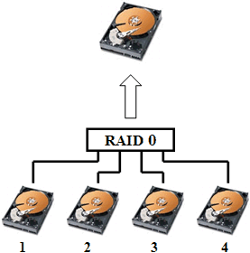
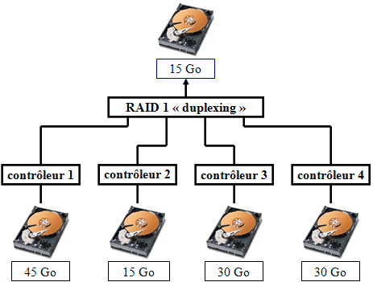
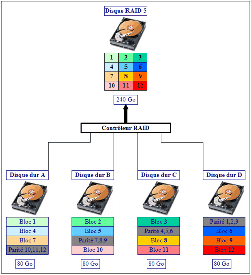

新购进一台戴尔塔式服务器，机器3*300G的硬盘默认已做RAID5配置，新增硬盘需配置磁盘阵列
RAID容量计算器
配置前，可根据硬盘数和RAID级别，可计算配置后的硬盘实际可用容量
参考计算工具
#RAID基础知识
RAID 0

- 特点：高性能 低稳定性 中等成本
- RAID0又称为Stripe（条带化）或Striping，它代表了所有RAID级别中最高的存储性能。
- RAID0的缺点是不提供数据冗余，因此一旦用户数据损坏，损坏的数据将无法得到恢复。
- RAID 0具有的特点，使其特别适用于对性能要求较高，而对数据安全不太在乎的领域，如图形工作站等。
- 对于个人用户，RAID 0也是提高硬盘存储性能的绝佳选择。
RAID 1

- 特点：高稳定性 普通性能 中等成本
- RAID 1又称为Mirror或Mirroring（镜像），它的宗旨是最大限度的保证用户数据的可用性和可修复性。
- RAID 1的操作方式是把用户写入硬盘的数据百分之百地自动复制到另外一个硬盘上。
- Mirror虽不能提高存储性能，但由于其具有的高数据安全性，使其尤其适用于存放重要数据，如服务器和数据库存储等领域。
RAID 5

- 特点：高性能 中等稳定性 中等成本
- RAID 5 是一种存储性能、数据安全和存储成本兼顾的存储解决方案。
- RAID 5可以理解为是RAID 0和RAID 1的折衷方案。
- RAID 5可以为系统提供数据安全保障，但保障程度要比Mirror低而磁盘空间利用率要比Mirror高。
- RAID 5具有和RAID 0相近似的数据读取速度，只是多了一个奇偶校验信息，写入数据的速度比对单个磁盘进行写入操作稍慢。同时由于多个数据对应一个奇偶校验信息，RAID 5的磁盘空间利用率要比RAID 1高，存储成本相对较低。